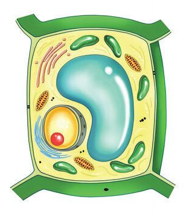
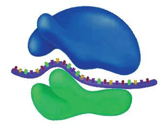
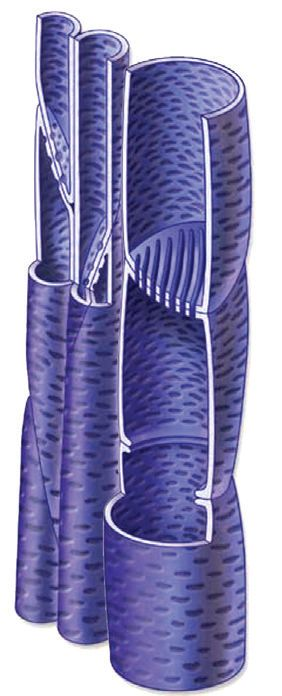
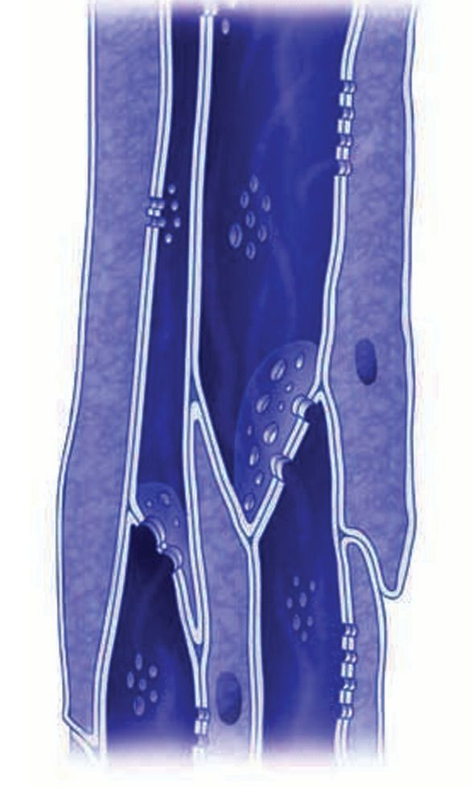
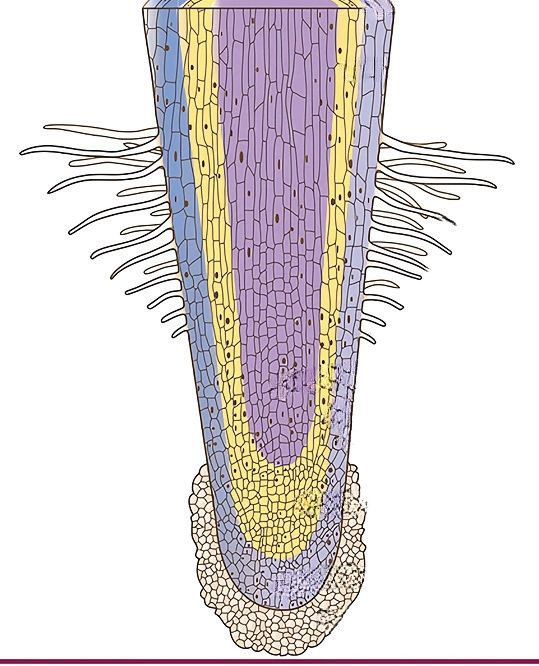
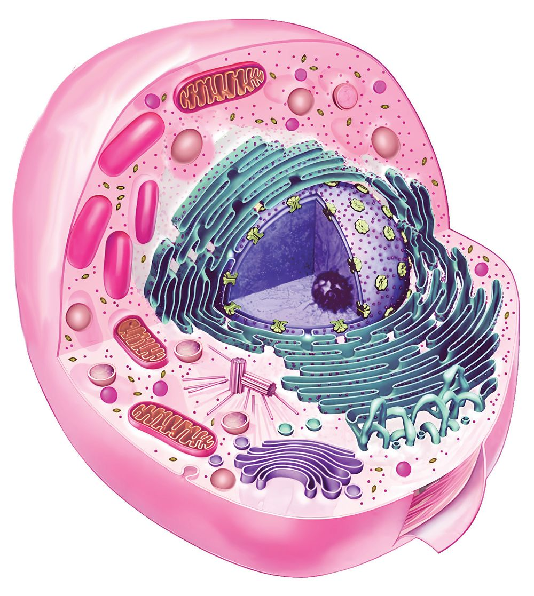
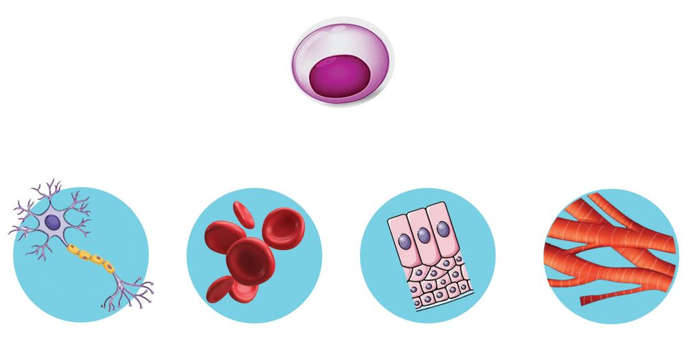

This is an incident from the
17th century. A scientist named
Robert Hooke was observing a
thin piece of cork through his
Robert Hooke
(1635-1703)
Fig. 9.1
microscope. The small parts,
like boxes, were not one, but a
thousand! He called them ‘cells’,
meaning chambers.
In the following years, Anton
van
Leeuwenhoek
observed
the water taken from a pond
Leeuwenhoek
(1632-1723)
Fig. 9.3
with the help of a much better
microscope and discovered the
micro-organisms in it.
Cell Biology is the study of cells. It is a very
broad and evolving branch of science.
History of Cell Biology
Let's familiarise the scientists who made important
discoveries in the field of cell biology.
Matthias Jakob Schleiden
1838
Discovered that all plants are
composed of cells.
Theodor Schwann
1839
Discovered that all animals are
composed of cells.
Rudolf Virchow
Introduced the concept that new
cells are formed from pre-existing
cells.
1855
Illustration 9.1
Cell theory is formulated by integrating the inferences
of many scientists of 19th century. Cell Biology was
developed on the basis of cell theory.
Cell Theory
All organisms are made up of one or more cells.
Cell is the basic unit of life.
New cells originate from pre existing cells.
Discuss, plan and execute observation - experiment
activities to prove the concept that all organisms are
made up of one or more cells.
135
You know that different types of microscopes are
used to observe very small or tiny cells. In simple
microscopes, lenses are used to magnify objects.
Human eye can distinguish two spots having a distance
of 0.2 mm in adequate light. This distance is called
resolution of the eye. Lens is required to distinguish
spots having a distance of less than 0.2 mm.
A simple microscope in which a single lens is used, can
magnify an object upto 10 times than the original size.
A compound microscope, in which more than one lens
is used, can magnify an object up to 1000 times.
Simple
Microscope
Compound
Microscope
Fig. 9.4
Let's do an activity of observing a slide through
compound microscope.
For this, you have to familiarise with the parts and
functions of a microscope.
Complete the illustration 9.2 and table 9.1 by observing
a compound microscope and a discussion based on the
given indicators.
Indicators
Where should the slide be placed in a microscope?
Which is the part that regulates the light on the
slide?
Which are the lenses used in microscopes?
Magnification Power
Magnification power of a lens is its ability to magnify
objects. If eye piece lens magnifies the object to
10 x (10 times) and objective lens magnifies it into
40 x (40 times), the magnification power of the lens
is 400 x.
137
Page 138
Figure fig_ch08_p138_01 (Page 138)
BASIC SCIENCE - VIII
Part of a microscope
Function
Eye piece lens
Objective lens
Fixes the slide on the
stage
Helps to focus light on
the object
Table 9.1
How can we observe
and study the micro
organisms that
cannot be seen
through a simple
microscope?
Fig. 9.5
Haven't you noticed the doubt of the child ?
What is your opinion ?
Electron microscope is an instrument that magnifies
objects more than a million times. It helps to observe
cells, viruses and molecular structure in detail. In
electron microscope electron beam is used instead of
light. Different types of electron microscopes are used
now a days. Collect more information on this, prepare
slide and present it in your class.
In 1934 German scientists
Ernest Raska and Max
Knoll
invented
electron
microscope. In an electron
microscope, electromagnetic
lenses are used to focus
Ernest Ruska, Max Knoll
a beam of electrons onto
Fig. 9.7
the specimen, allowing for
much higher resolution imaging compared to light
microscopes. Different types of electron microscopes
are used for various purposes.
Covid-19 virus
Pollen grains
Fig. 9.8
View of certain
specimens through
electron microscope
Complete the table 1.2 comparing the peculiarities of
different types of microscopes.
Peculiarity
Compound
microscope
Electron
microscope
Need of light
Magnifying power
Lens
Table 9.2
Upto what size tiny objects can be observed through
different types of microscopes? Analyse the illustration
9.3 and prepare a note on it.
139
Page 140
Figure fig_ch08_p140_01 (Page 140)
BASIC SCIENCE - VIII
Virus
Atom
Mitochon
drion
RBC
Animal cell
Paramecium
Protein
DNA
Egg
Bacterium
Yeast
Plant cell
Electron microscope
Compound microscope
Illustration 9.3
140
Page 141
Figure fig_ch08_p141_01 (Page 141)
BASIC SCIENCE - VIII
Let's observe cells
You might have understood that organisms have cells
of different shapes and sizes in their bodies. Do all
these cells function individually or do they perform
various functions together?
Observe the section of a stem and draw the diagram.
Compare the diagram with the figure 9.9.
Fig. 9.9
What are the things to be taken care of when taking a
cross section of a stem? Draw inferences by a discussion
using the indicators given.
Indicators
while preparing the slide,
staining
observing in high power and low power
observing and illustrating.
A record should be accurately maintained as the
procedure is completed.
Are the cells in the leaf similar to those in the stem?
Observe the slide of the section of leaf under a
microscope. Compare it with illustration 9.4.
You have observed the diverse cells in the leaf and
stem, haven't you?
Although cells vary in appearance, their basic structure
remains the same.
Observe the structure of the plant cell given in
Illustration 9.5.
Label the parts that you can observe.
Practical record
Practical record is a comprehensive
note and evidence of experiments that
are already done. It may contain the
following headings:
142
•
Name of the experiment
•
Aim
•
Materials required
•
Procedure
•
Observation
•
Inference
Page 143
Figure fig_ch08_p143_01 (Page 143)
BASIC SCIENCE - VIII
Illustration 9.5
By analysing the given description, related pictures,
and illustrations prepare a note on cell organelles and
their functions.
Cell wall
Cell wall is a rigid layer outer to the cell membrane.
It provides protection and shape to the cell.
In plants, cell wall is mainly made up of cellulose.
Cell membrane (Plasma membrane)
Fig. 9.10
The cell membrane is a thin, flexible layer that
surrounds the cell. Substances enter and leave the cell
through this membrane. The plasma membrane does
not allow all substances to pass through. Therefore,
the plasma membrane is known as a semi-permeable
membrane. Observe the structure of the cell membrane
as illustrated below.
Fig. 9.11
Protein molecule
Lipid bilayer
Protein molecule
Illustration 9.6
Protoplasm
Protoplasm consists of all the components inside the
cell membrane, including the nucleus and cytoplasm.
Cytoplasm
A jelly like fluid that fills the cell. It maintains all the
organelles in their place and serves as the medium for
chemical reactions.
Cell Organelles
Cell organelles are the parts that perform the functions
necessary for the survival and functioning of the cell.
Let's familiarise certain major cell organelles.
Nucleus
Nucleus is the centre that controls
the cell. Chromatin network is
the structure that appears like
a network of threads within the
nucleoplasm. During cell division
this chromatin networks condense
into chromosomes. There is also a
part called nucleolus within the
nucleus.
Chromatin reticulum
Nucleolus
Fig. 9.13
Golgi Apparatus
These are cell organelles that
appear as stacked membrane
layers. These organelles transport
proteins and lipids to various parts
of the cell and outside the cell,
wrapped in membranous sacs.
Fig. 9.14
Endoplasmic Reticulum
These organelles appear as a
network of tubules within the cell,
serve as pathways for conducting
materials. It helps in the synthesis
and removal of materials required
by the cell.
Fig. 9.15
Mitochondria
Energy production centre of the
cell. It stores the energy obtained
from the oxidation of glucose and
distributes it as and when required.
Fig. 9.16
145
Page 146
Figure fig_ch08_p146_01 (Page 146)

Figure fig_ch08_p146_02 (Page 146)

Figure fig_ch08_p146_03 (Page 146)
BASIC SCIENCE - VIII
Plastids
Plastids are specific parts in the plant cells that help
in the synthesis and storage of food materials. They
have a two layered membrane. Different types of
plastids perform different functions.
Types of Plastids
Fig. 9.17
Chloroplasts
The green plastids present in leaves and green stems.
They contain a green pigment called chlorophyll. It
helps to absorb sunlight for synthesising food.
Chromoplasts
These are coloured plastids seen in fruits and
flowers. They contain pigments that impart red,
orange and yellow colours. They attract the animals
for pollination and seed dispersal.
Leucoplasts
White or colourless plastids found in seeds, roots
and stems. Leucoplasts store substances like
starch,oil and protein.
Vacuole
Stores water, nutrients and wastes. Usually large
vacuoles are seen in plant cells.
Ribosome
Fig. 9.18
They are found in the cytoplasm either freely or
attached to endoplasmic reticulum. They function as
centre for protein synthesis.
Make a model of any cell organelle. Prepare charts
including their characteristics and the functions they
perform.Exhibit the models and charts in the class.
Plant Tissues
Fig. 9.19
A cross-section of a plant stem when observed under
a microscope is shown in illustration 9.7.
Discuss and draw inferences based on the indicators
as to where similar cells are found.
Indicators
Cells with thin cell walls.
Cells with only the corners thick.
Cells with a thick cell wall throughout.
The group of similar type of cells are known as tissues.
To understand more about the various tissues we have
found, analyse the illustration 9.7 and the description
given below and complete the table 9.3.
• Contain living cells.
• Thin cell wall.
• Intercellular spaces are present.
• Perform functions such as photosynthesis and
food storage.
Parenchyma
• Cells in some parts have the ability to divide.
Fig. 9.20
• A tissue made up of living cells.
• Cell wall made of substances such as cellulose
and pectin.
• The cell wall is thicker only in some parts.
• Helps maintain the shape of plant parts.
Collenchyma
Fig. 9.21
• A tissue consists of dead cells.
• Thick cell wall.
• The cell wall is of uniform thickness
throughout, providing strength and
support to plant parts.
Sclerenchyma
Fig. 9.22
Tissues that are composed of similar type of cells are
known as simple tissues
148
Page 149

Figure fig_ch08_p149_01 (Page 149)

Figure fig_ch08_p149_02 (Page 149)
BASIC SCIENCE - VIII
Examine figure 9.23 given below.
Xylem
Phloem
Fig. 9.23
Xylem and phloem are composed of cells with different
shape and size. So they are called complex tissues.
Conduction of water and salt to the leaves take place
through xylem. Phloem carries food synthesised by the
leaves to different parts of the plant body.
Plant tissues
Characteristics
Functions
Parenchyma
Living tissue. Certain parts of
the cell wall has thickening.
Table 9.3
149
Page 150
Figure fig_ch08_p150_01 (Page 150)

Figure fig_ch08_p150_02 (Page 150)
BASIC SCIENCE - VIII
Meristematic tissues
Meristematic tissues are composed of cells that are
capable of continuous division. Meristematic cells
cause growth of plants.
Observe the figure 9.21 and list out the characteristics
of meristematic cells.
Abundant cytoplasm
Large nucleus
Thin cell wall
Fig. 9.24
Observe the illustration 9.8
Apical meristem is seen at the tip of root and stem.
Those seen at the lateral sides are called lateral
meristem. In monocot plants, the meristem seen in
between two nods is called intercalary meristem.
Apical meristem
Lateral meristem
Apical meristem
Tip of the stem
150
Tip of the root
Page 151
Figure fig_ch08_p151_01 (Page 151)
BASIC SCIENCE - VIII
The stem of
plants like a bamboo
does not have lateral
growth. Why?
Find out the reason.
The location of
intercalary meristem
Illustration 9.8
Cell clusters or tissues that have lost their ability to
divide are known as permanent tissues. Parenchyma,
sclerenchyma, collenchyma, xylem and phloem are
examples for permanent tissues.
Complete illustration 9.9.
Plant tissues
Meristematic tissues
Apical meristem
..................
..................
Permanent tissues
Simple tissues
..................
.................
.................
Collenchyma
Phloem
.................
Illustration 9.9
151
Page 152

Figure fig_ch08_p152_01 (Page 152)
BASIC SCIENCE - VIII
Animal Cell
Isn’t the animal body also composed of various types of
cells? Which are the major cell organelles in animal
cells?
Observe illustration 9.10 and label the related parts.
Some cell organelles that are not found in plant cells
exist in animal cells. Name them. What is their function?
Complete the table 9.4 through discussion.
Part
Cell wall
Plant cell
Animal cell
Function
present
Centrioles
Plastids
not present
Lysosome
Table 9.4
Animal Tissue
Tissues composed of group of similar cells perform
various functions body of animals. Analyse the given
description about various types of animal tissues and
make an understanding on it.
Epithelial tissue
•
Covers and protects the surfaces of the body and
internal organs.
•
Helps in the absorption of various substances.
•
It produces secretions like mucus.
Fig. 9.25
Connective tissue
•
•
•
Provides support to various parts of the body.
Connects various parts together.
Bone, blood, fibrous tissue, etc. are connective
tissues.
Muscle tissue
•
Helps in body movement and locomotion.
•
Composed of cells capable of contraction and
relaxation.
Fig. 9.26
Fig. 9.27
Neural tissue
•
•
Makes impulse transmission possible.
Controls and coordinates bodily activities.
Fig. 9.28
153
Page 154

Figure fig_ch08_p154_01 (Page 154)
BASIC SCIENCE - VIII
Stem Cells
Stem cell
Nerve cell
Blood cell
Epithelial cell
Muscle cell
Illustration 9.11
Stem cells are specialised cells that can develop into
various types of cells such as muscle cells, nerve cells,
blood cells, etc. They are called the body's master cells
because they have the ability to create new types of
cells.
Stem cells help to eliminate damaged cells, promote
the growth of new cells and maintain healthy tissues.
In modern medicine stem cells have great significance.
Prepare a poster emphasising the importance of stem
cells through additional data collection and exhibit it in
the classroom.
How many creatures of different shapes and sizes are
there around us!
Despite these differences there are many similarities
among living organisms. Most importantly all living
things are made up of cells. Cell division is the
fundamental reason for growth in all organisms except
unicellular organisms. These common characteristics
of living things lead us to the reality that the basis of
life is one and the same.
Let's Assess
1. Identify the word pair relationship and fill the blanks.
a)
compound microscope : visible light
..................................
: electron beam
b)
plant cells
: eukaryote
...................
: prokaryote
c)
Endoplasmic reticulum : material transport in cytoplasm
.....................................
: centre for production and distribution
of energy
2. Choose the statements related to plant cell from the following.
(a) Centrosome is present
(b) Plasma membrane is absent
(c) Plastids are present
(d) Presence of comparatively large vacuoles
3. Information related to certain cell organelles are given in the table.
Complete it by selecting suitable terms from the box.
A. Helps to transport proteins and lipids to the target site
B. Contains pigments that absorbs sunlight
C. Site of protein synthesis
D. Stores starch, oil, protein
a.
d.
Plasma membrane
Ribosome
b. Leucoplast c. Endoplasmic reticulum
e. Chloroplast f. Golgi apparatus
Extended Activities
1. Prepare models of Plant cell and Animal cell using materials available in
your surroundings.
2. Prepare a picture chart showing the diversity of cells and exhibit it in
the class.
3. Prepare a timeline showing the development of cytology and present it
in the class.